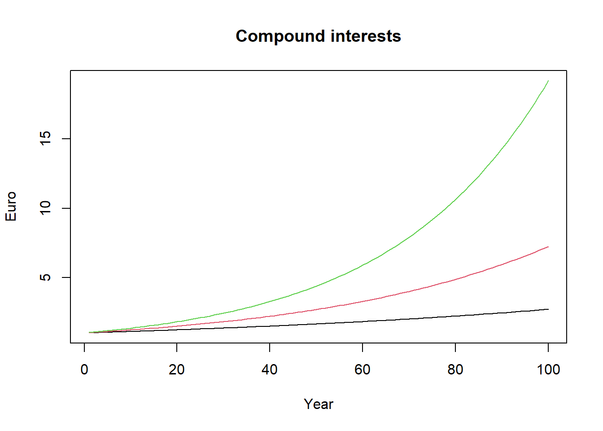
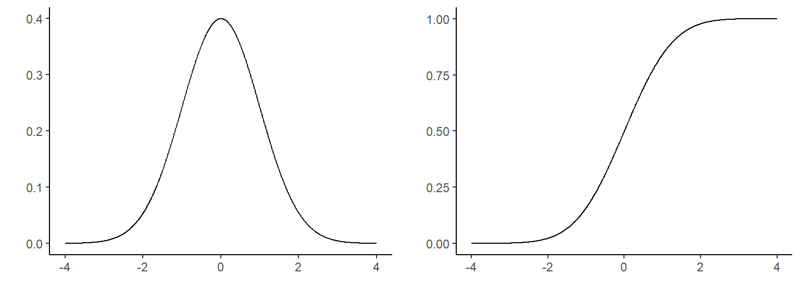

Chapter 7 Example
The mean lifetime of a sample of 100 light bulbs is computed to be 1570 hours with a standard deviation of 120 hours. If \(\mu\) is the mean lifetime of all the light bulbs produced, test the hypothesis that the population mean is \(\mu = 1600\) hours against the alternative that \(\mu \neq 1600\) using a significance level of 5%. Find the p-value of the test and build a 95% confidence interval.
\[H_0: \mu = 1600\]
\[H_1: \mu \neq \space 1600\]
We need to construct our test statistic to perform the test. In practice, wee need to transform the computed mean obtained from the sample of light bulbs into a statistic that follow a standard normal distribution with zero mean and unit variance.
\[z_{test} = \frac{\bar{x} - \mu}{\frac{\sigma}{\sqrt{n}}} = \frac{1570 - 1600}{12} = -2.5\]
## [1] 2.5Since in this exercise we are interested in performing a two-sided test (look a the formulation of the null and alternative hypothesis), we take the absolute value of our \(z\) test. We can reject \(H_0\) at the 5% significance level (\(\alpha\) = 5%) if,
\[|z_{test}| > z_{crit}\]
## [1] TRUEWe can reject \(H_0\) at the 5% significance level. In the following graph, in green we can see the rejection region (the two green shaded areas add up to 5%) while with the yellow line it is indicated the value of our \(z\) test in both tails of the distribution. As we said, since the value of our \(z\) test falls within the rejection region, we can reject \(H_0\) at the 5% significance level.

What do we see highlighted in black in the graph above? The sum of the two black areas represent our p-value for the z score that we have just calculated. We can think of the p-value as the smallest significance level at which we still reject the null hypothesis (or the largest significance level at which the null hypothesis cannot be rejected). How large is the p-value for our z test?
## [1] 1.241933How can we interpret the p-value? In our exercise, the p-value of 1.24% represents the probability that a mean lifetime of less than 1570 or more than 1630 hours would occur by chance if \(H_0\) were actually true. A rather small probability. How did we obtain the values 1570 and 1630? We have used (half) of the p-value to calculate the quantiles of a normal distribution with mean \(mu = 1600\) and standard deviation \(120/\sqrt{100}\).
## [1] 1630## [1] 1570## [1] 1.241933Since we see that the p-value is larger than 1%, we already know that we will fail to reject the null hypothesis at the 1% significance level (\(\alpha\) = 1%) . Shouldn’t we have used a t test rather than a \(z\) test as suggested by professional statisticians? Probably yes. Since we do not know the population standard deviation (the standard deviation of all light bulbs), a t test sounds more appropriate. However, since our sample is relatively large (\(n = 100\)), much larger than the commonly suggested rule of thumb (\(n > 30\)), we will practically obtain (almost) the same result using the normal distribution and the t distribution.4 To conclude, we need to construct the 95% confidence interval (\(100 - \alpha\), where \(\alpha\) = 5%).
\[(\bar{x} + z_{\alpha / 2} \cdot \frac{\sigma}{\sqrt{n}}; \bar{x} + z_{1 - \alpha / 2} \cdot \frac{\sigma}{\sqrt{n}})\]
We must be careful with the signs in the formula above. Once we look up the critical value \(z_{\alpha / 2}\) (or we compute it using R) we will see that the quantity is actually negative. If we include the negative sign in the formula for the confidence interval, it would not be wrong, but it can create some confusion. This is why it is better to use the formula below. In this case, we have to include the negative sign in the formula because \(z_{1 - \alpha / 2}\) is going to be a positive number and this is the version that we are going to implement in R.
\[(\bar{x} - z_{1 - \alpha / 2} \cdot \frac{\sigma}{\sqrt{n}}; \bar{x} + z_{1 - \alpha / 2} \cdot \frac{\sigma}{\sqrt{n}})\]
## [1] 1546.48 1593.52The hypothesized value for the mean lifetime of all the bulbs produced was 1600 working hours. Since this particular value falls outside the confidence interval constructed around the sample mean, we can reject \(H_0\). With the confidence interval test the null hypothesis is rejected if and only if the hypothesized value falls outside the confidence interval. The \(z\) test (or \(t\) test) and the confidence interval test are basically an elaboration of one another and provides always the same test decision.5
7.1 The normal distribution6
The normal distribution is a common probability distribution in statistics and econometrics (it is just one of many distributions). The normal distribution fits a number of natural and social phenomena. When a phenomenon (a random variable) has a normal distribution, its probability density function (for short, PDF) assumes the well-known bell-shaped curve. The normal distribution is sometimes called the Gaussian distribution or the Gauss curve in honor of the famous mathematician Carl-Friedrich Gauss.7 Shape and position of the normal distribution are entirely determined by mean (\(\mu\)) and standard deviation (\(\sigma\)) of the normally distributed random variable. This is written as:
\[X \sim Normal(\mu, \sigma)\]
For example, we see that the two normal distributions shown in the following graph have the same mean but different standard deviations.
The mean determines the location of the normal distribution in the horizontal axis. The majority of the body is located around the mean to which correspond the peak in the distribution. The standard deviation determines the shape of the curve. In practice, it determines how far the values of the variable are from the mean. This means that a higher mean shifts the curve to the right without changing its shape. Similarly, a higher standard deviation widens the body of the curve without shifting its position on the horizontal axis.
The normal distribution has a number of interesting and useful properties. First of all, it is symmetrical with respect to the mean, from which it follows that half of the values are distributed half to the right and half to the left of the mean. Knowing the mean and standard deviation of a certain event or random variable, the normal distribution allows us to calculate the probability that the event will assume a certain value or range of values. Roughly speaking, this correspond to the area below the curve. In reality, this is done using the cumulative distribution function (CDF) which is nothing more than the integral of the PDF. The following figure shows the relationship between PDF (left) and CDF (right) of a normally distributed random variable with mean 0 and standard deviation 1.

For common misunderstandings about the confidence interval, see here.↩︎
The discussion presented here and in particular the proof of mean and standard deviation of the the standardized random variable rely on Wooldridge, J. Introductory Econometrics: A Modern Approach (Appendix C).↩︎
At first glance, many phenomena do not appear to follow a normal distribution. However, after a logarithmic transformation they assume a (log)normal distribution.↩︎